Galeri Desa Badamita

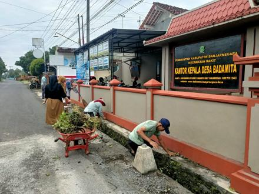
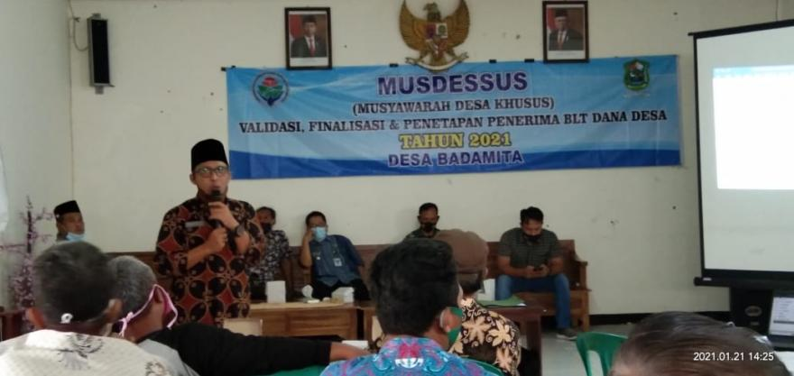
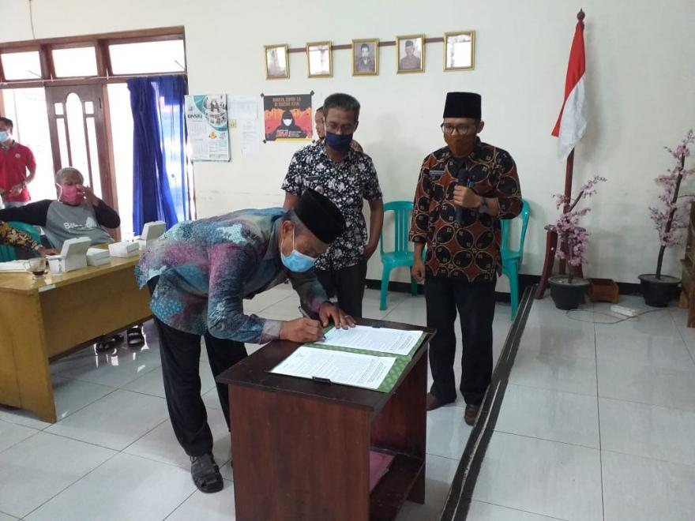
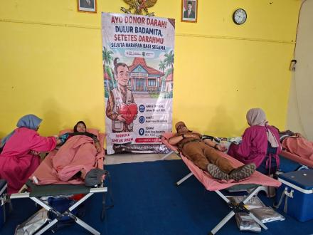
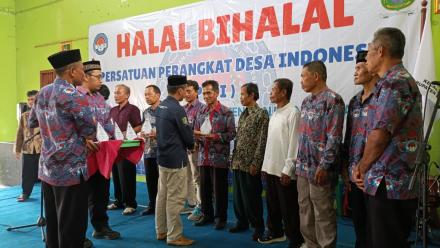
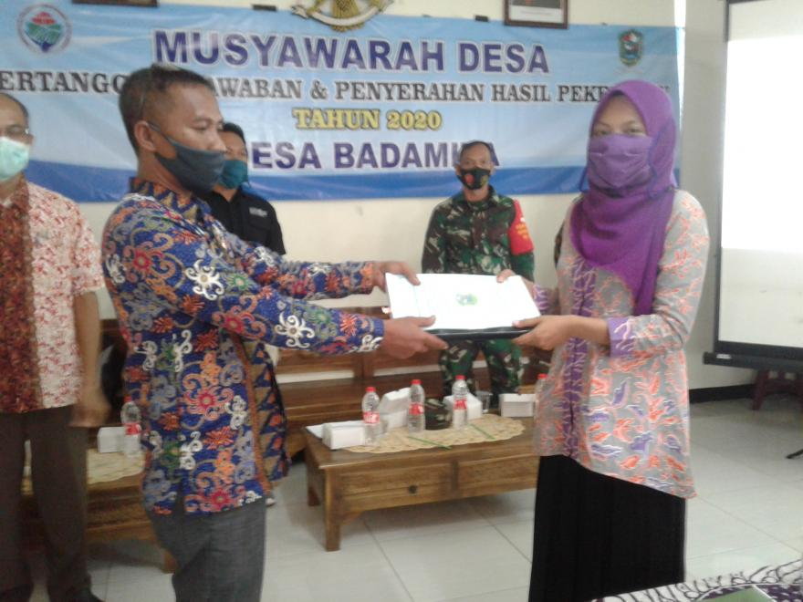
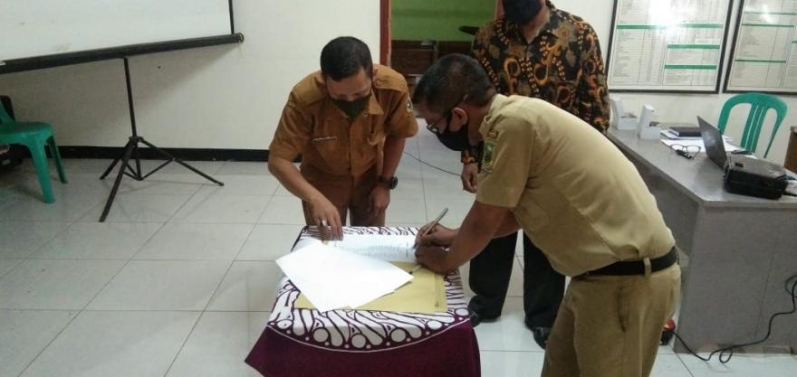
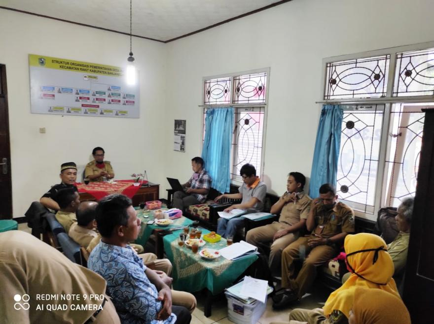
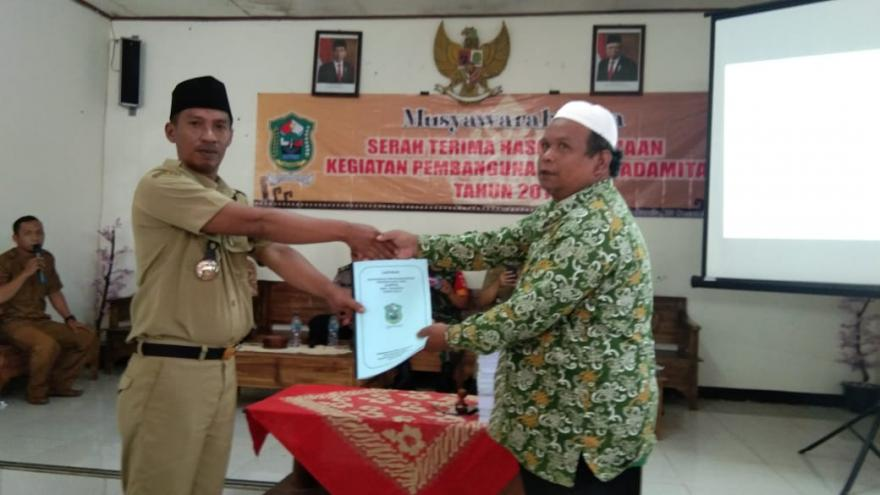
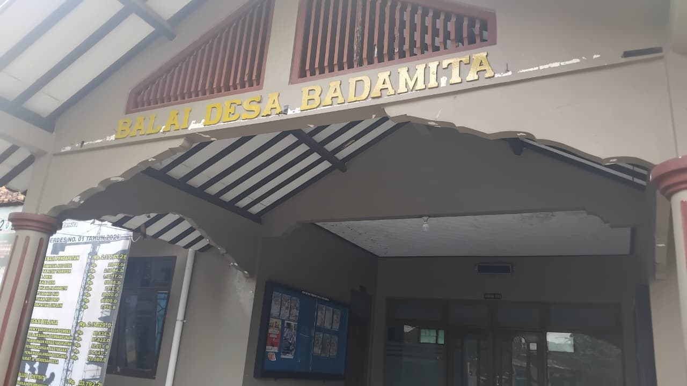
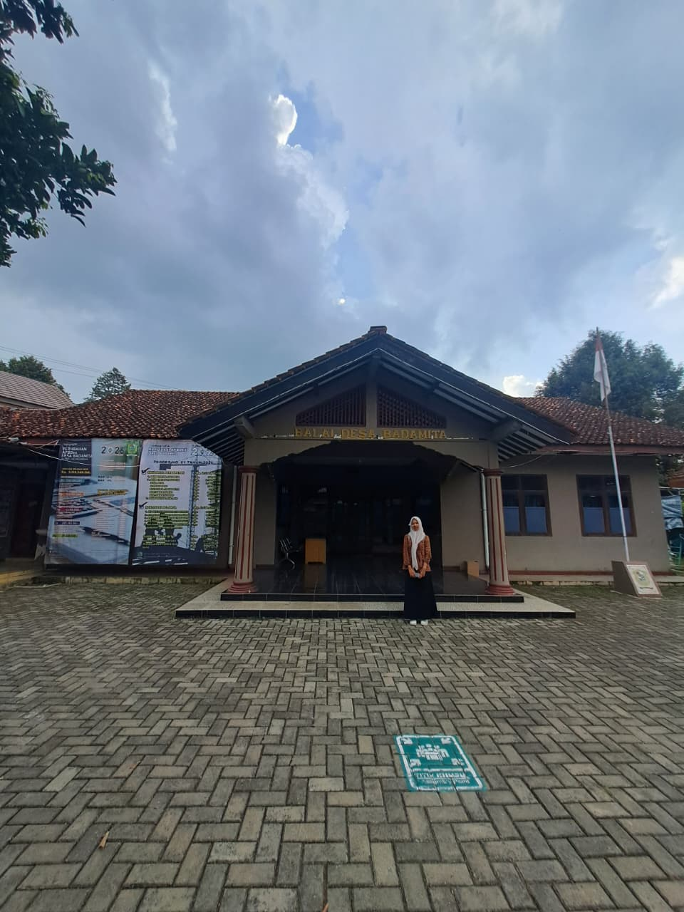
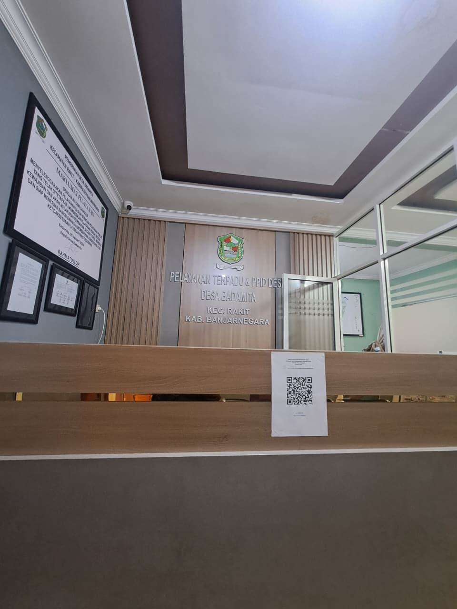
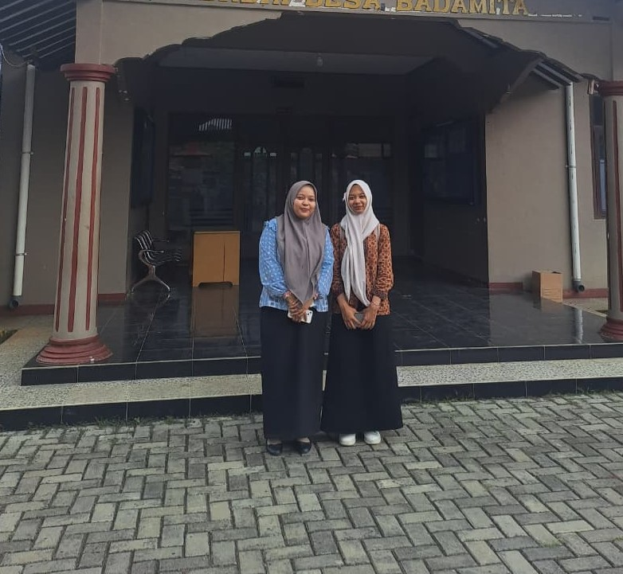
Kecamatan Rakit, Kabupaten Banjarnegara.
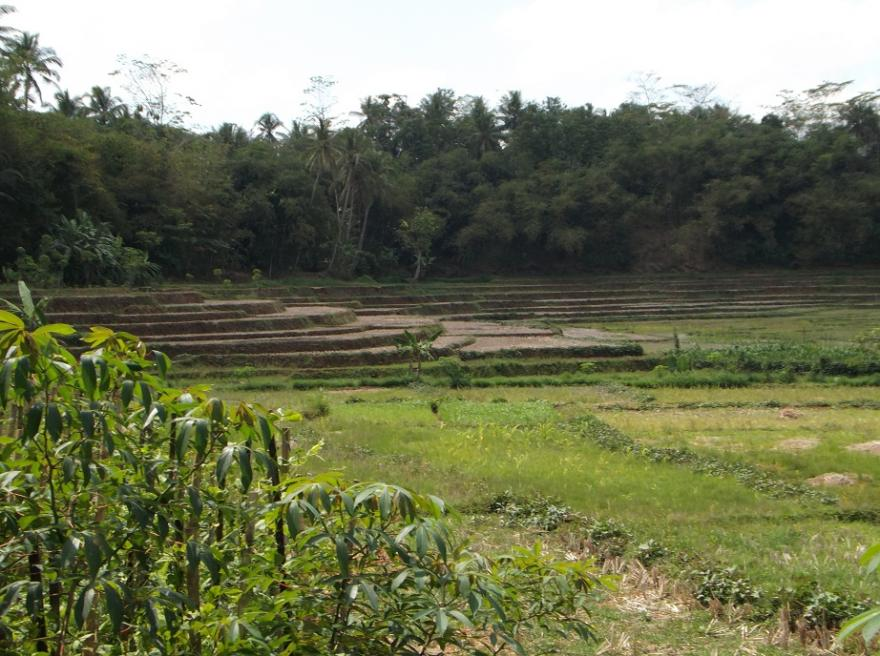
Desa Badamita terletak di Kecamatan Rakit, Kabupaten Banjarnegara, Provinsi Jawa Tengah. Desa ini berada di dataran rendah yang subur dengan sumber air yang melimpah dari Sungai Serayu.
Mayoritas penduduk bermata pencaharian sebagai petani dan pedagang. Desa Badamita terus berkembang dengan memanfaatkan teknologi informasi untuk meningkatkan kualitas pelayanan publik.
Desa Badamita memiliki berbagai potensi yang terus dikembangkan untuk meningkatkan kesejahteraan masyarakat, meliputi sektor pertanian, perdagangan, kerajinan tangan, dan pariwisata lokal.
Lahan pertanian yang subur menghasilkan padi, jagung, singkong, dan berbagai palawija. Sektor UMKM juga tumbuh pesat dengan dukungan BUMDes dan program pemberdayaan ekonomi desa.
Desa Badamita merupakan sebuah desa yang terletak di ujung barat laut Kabupaten Banjarnegara yang secara geografis masuk dalam wilayah Kecamatan Rakit Kabupaten Banjarnegara dan berbatasan langsung dengan Kabupaten Purbalingga. Desa Badamita memiliki luas kurang lebih 360 hektare dengan batas wilayah sebelah selatan berbatasan dengan Desa Kincang dan Desa Tanjunganom, sebelah barat berbatasan dengan Desa Bandingan dan Desa Timbang Kecamatan Kejobong Kabupaten Purbalingga, sebelah utara berbatasan dengan Desa Tribuana dan Desa Sambong Kecamatan Punggelan, sedangkan sebelah timur berbatasan dengan Desa Lengkong.
Mayoritas penduduk Desa Badamita bermata pencaharian sebagai buruh tani dan peternak. Selain dikenal sebagai wilayah agraris, Desa Badamita juga memiliki sejarah panjang yang diwariskan secara turun-temurun oleh masyarakat setempat.
Cerita asal-usul berdirinya Desa Badamita sendiri berkaitan dengan kisah yang berkembang sejak masa Kerajaan Majapahit. Kisah tersebut menjadi bagian dari warisan budaya dan kearifan lokal yang masih dihormati oleh masyarakat hingga saat ini.
Cerita ini bermula pada masa Kerajaan Majapahit yang dipimpin oleh Raja Durga Meluh. Dalam sebuah pertemuan agung kerajaan yang dihadiri Patih Sura Kecu, Ki Tunggal Seta, para guru, dan para punggawa kerajaan, Raja mengungkapkan kegelisahannya terhadap Tumenggung Citra Yuda yang menetap di wilayah Larangan.
Tumenggung Citra Yuda dikenal sebagai pemimpin yang sakti dan selalu memperoleh kemenangan dalam setiap peperangan. Sebelumnya, Raja Durga Meluh telah memberikan tiga batang pohon untuk ditanam di wilayah Tumenggungan sebagai simbol kemakmuran dan keindahan lingkungan. Namun karena Tumenggung Citra Yuda tidak hadir dalam pertemuan agung kerajaan, Raja merasa tersinggung dan mulai menyimpan rasa tidak suka.
Dalam pertemuan tersebut, Raja meminta pendapat kepada para guru dan punggawa mengenai cara mengalahkan Tumenggung Citra Yuda. Ki Tunggal Seta kemudian menyarankan agar Raja mempersunting adik perempuan Tumenggung Citra Yuda yang bernama Dewi Anjani. Melalui pernikahan tersebut diharapkan Dewi Anjani dapat mengungkap rahasia kesaktian serta kelemahan kakaknya.
Raja Durga Meluh menyetujui usulan tersebut dan memerintahkan Patih Sura Kecu untuk melamar Dewi Anjani. Setelah perjalanan panjang melewati hutan dan berbagai rintangan, Patih Sura Kecu berhasil membawa Dewi Anjani ke Majapahit.
Sebelum bertemu dengan Dewi Anjani, Raja kembali diingatkan oleh Ki Tunggal Seta mengenai tujuan utama pernikahan tersebut. Dewi Anjani akhirnya mengungkapkan bahwa kelemahan Tumenggung Citra Yuda terletak pada cinde atau selendang yang dijeratkan ke lehernya.
Pada saat pesta pernikahan Raja Durga Meluh dan Dewi Anjani berlangsung meriah dengan berbagai pertunjukan tari, seluruh tamu ikut larut dalam suasana perayaan. Ketika Tumenggung Citra Yuda lengah, Raja memerintahkan Patih Sura Kecu untuk menjalankan rencana yang telah disiapkan. Selendang dijeratkan ke leher Tumenggung Citra Yuda hingga menyebabkan kematiannya.
Kabar kematian Tumenggung Citra Yuda akhirnya sampai kepada adiknya, Setya Guna, yang tinggal di Tumenggungan Sokaraja. Setya Guna segera berangkat menuju Majapahit untuk memastikan kabar tersebut dan mencari makam kakaknya.
Setelah menemukan makam yang diyakini sebagai tempat peristirahatan Tumenggung Citra Yuda, Setya Guna berniat memindahkan jasad kakaknya ke Tumenggungan Sokaraja. Namun keberadaannya diketahui oleh warga yang mengira Tumenggung Citra Yuda hidup kembali karena kemiripan wajah mereka.
Kabar tersebut segera menyebar ke seluruh wilayah Majapahit dan sampai ke telinga Raja Durga Meluh. Raja yang terkejut kemudian memerintahkan seluruh pasukannya untuk mengejar dan membinasakan sosok yang dianggap sebagai Tumenggung Citra Yuda yang bangkit kembali.
Dalam pelariannya, Setya Guna menyeberangi sungai saat hujan deras dan banjir besar melanda. Banyak prajurit Majapahit yang tewas terseret banjir. Menurut cerita rakyat, lokasi tersebut kemudian dikenal dengan nama Banjarnegara.
Pengejaran terus berlanjut melewati berbagai wilayah yang kemudian dipercaya menjadi asal nama beberapa daerah seperti Banjarmangu, Wanadadi, Karangmangu, dan Paguan.
Setelah berhasil kembali ke Tumenggungan Larangan, Setya Guna mengumpulkan masyarakat dan menceritakan kematian kakaknya. Sebagai bentuk penghormatan, masyarakat menguburkan batang kayu yang digunakan sebagai ukuran makam Tumenggung Citra Yuda. Pada saat pemakaman tersebut disiapkan bunga soka dan uang rini sehingga tempat tersebut kemudian dikenal sebagai Sokarini.
Setelah wafatnya Tumenggung Citra Yuda, kepemimpinan Katumenggungan diteruskan oleh Setya Guna. Meskipun demikian, pasukan Majapahit masih berjaga di sekitar wilayah Tumenggungan dalam waktu yang cukup lama.
Akhirnya Patih Sura Kecu dan Ki Tunggal Seta memutuskan untuk menghentikan pengejaran karena tidak membuahkan hasil. Mereka mengumumkan bahwa peperangan telah dihentikan atau "Bada". Sebelum kembali ke Majapahit, para prajurit berpamitan atau "Pamita" kepada masyarakat setempat.
Dari peristiwa tersebut lahirlah nama "Badapamita" yang kemudian mengalami perubahan pengucapan menjadi "Badamita", nama yang digunakan hingga sekarang.
Tumenggung Citra Yuda memiliki seorang adik laki-laki bernama Setya Guna dan seorang adik perempuan bernama Dewi Anjani. Menurut cerita rakyat yang berkembang di masyarakat, Dewi Anjani merupakan ibunda dari Hanoman, tokoh kera putih dalam kisah pewayangan.
Hutan Larangan diyakini sebagai tempat Hanoman melakukan pertapaan. Di kawasan tersebut terdapat dua sumur yang dikenal dengan nama Sumur Bandung. Sumur ini dipercaya memiliki khasiat untuk menyembuhkan berbagai luka akibat peperangan maupun luka lainnya.
Konon, air dari Sumur Bandung menjadi salah satu rahasia mengapa pasukan Tumenggung Citra Yuda selalu mampu memenangkan pertempuran. Prajurit yang terluka dapat pulih kembali setelah menggunakan air dari sumur tersebut.
Hingga saat ini lokasi Sumur Bandung masih dikenal masyarakat dan berada di sebelah utara Lapangan Desa Badamita. Walaupun yang tersisa hanya berupa penanda berupa batu dan pohon beringin, tempat tersebut masih dianggap memiliki nilai sejarah dan budaya yang penting.
Sebelum peristiwa pinangan Raja Durga Meluh kepada Dewi Anjani, Tumenggung Citra Yuda menerima tiga batang pohon yang ditanam di sekitar wilayah Katumenggungan. Setelah beberapa tahun berlalu, Tumenggung Citra Yuda bersama Setya Guna berkeliling untuk meninjau perkembangan pohon-pohon tersebut.
Di wilayah sebelah barat, tanaman tumbuh subur sehingga daerah tersebut diberikan kepada Setya Guna dan dinamakan Margayasa. Ketika melanjutkan perjalanan ke arah selatan, Tumenggung Citra Yuda melihat pelangi yang indah dan mencium aroma harum sehingga wilayah tersebut diberi nama Tejasari.
Aroma harum yang semakin kuat selama perjalanan kemudian melahirkan nama Gendani. Sementara lokasi yang banyak ditumbuhi bunga diberi nama Kopak Kembang.
Karena bunga tersebut berasal dari pemberian Raja Durga Meluh, wilayah tersebut kemudian dinamakan Sokaraja yang berarti bunga pemberian raja.
Selanjutnya muncul nama-nama wilayah lain seperti Sokabangsa, Sokawera, dan Kandangwesi yang masing-masing memiliki cerita tersendiri berdasarkan perjalanan Tumenggung Citra Yuda dan Setya Guna saat berkeliling wilayah Katumenggungan.
Terlepas dari benar atau tidaknya kisah tersebut secara historis, cerita asal-usul Desa Badamita merupakan bagian dari warisan budaya yang telah hidup dan berkembang di tengah masyarakat selama bergenerasi-generasi. Cerita ini menjadi simbol identitas, kearifan lokal, serta penghormatan terhadap para leluhur yang telah membangun dan menjaga wilayah Desa Badamita.
Sebagai generasi penerus, masyarakat Desa Badamita memiliki tanggung jawab untuk menjaga, melestarikan, dan menghormati sejarah yang diwariskan secara turun-temurun agar tetap dikenal oleh generasi mendatang.
Desa Badamita berada di Kecamatan Rakit, Kabupaten Banjarnegara, Provinsi Jawa Tengah. Dapat diakses melalui jalur Banjarnegara–Purbalingga.
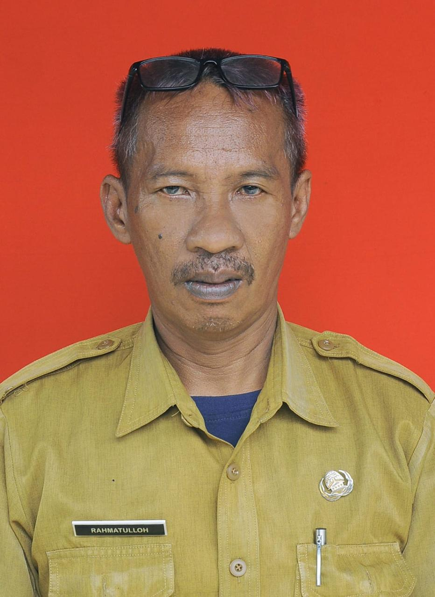
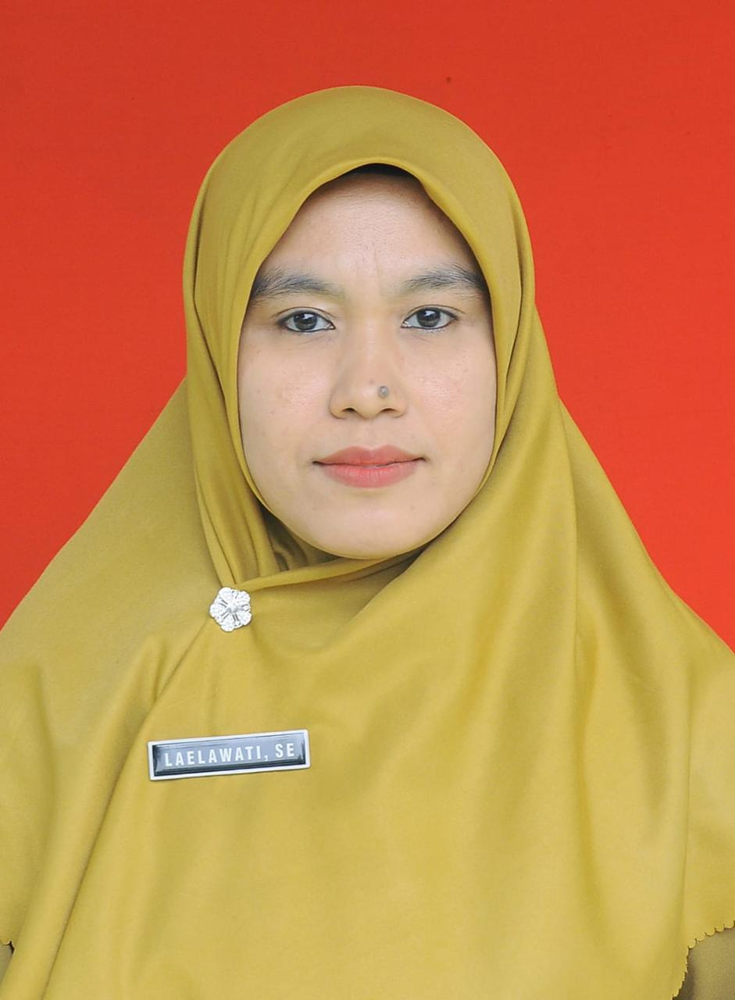
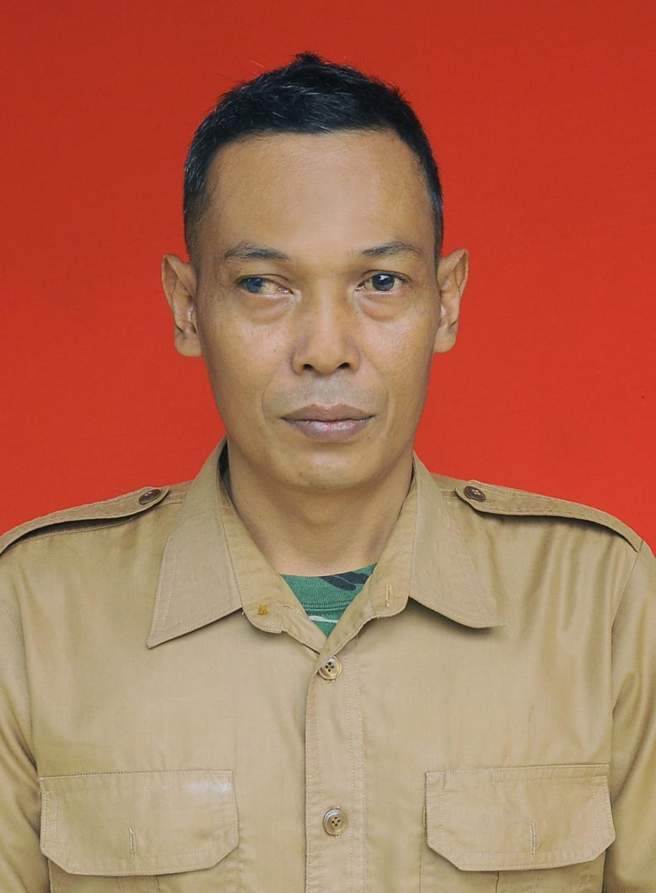
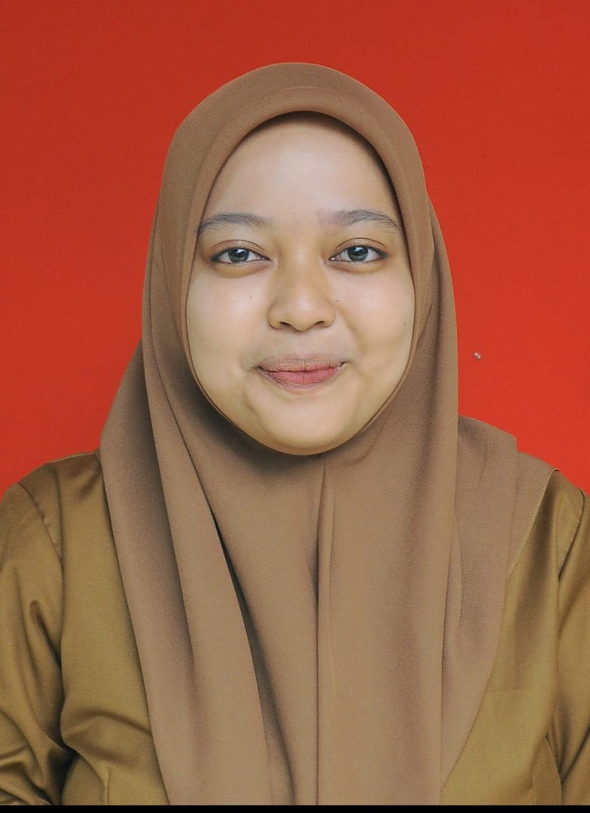
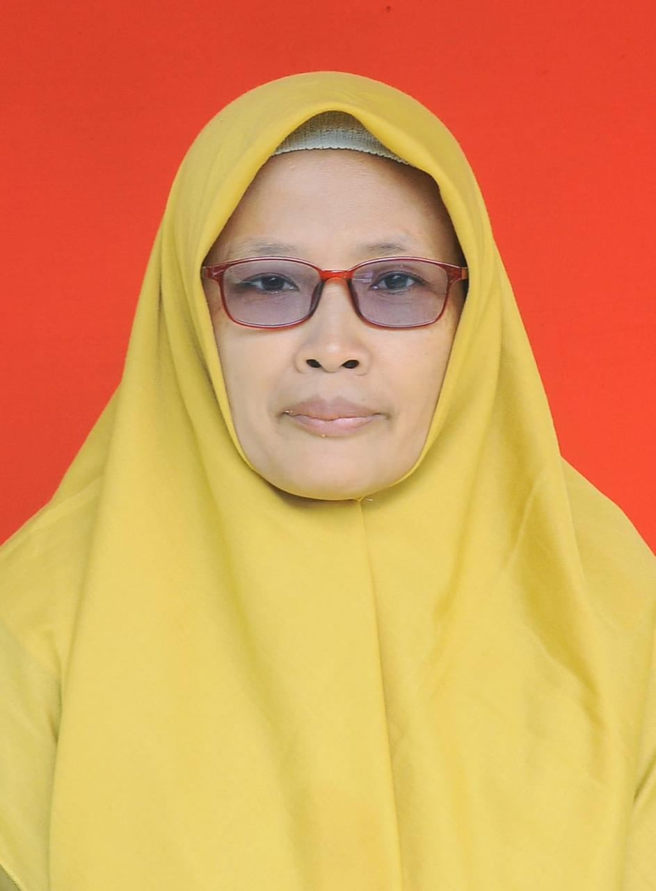
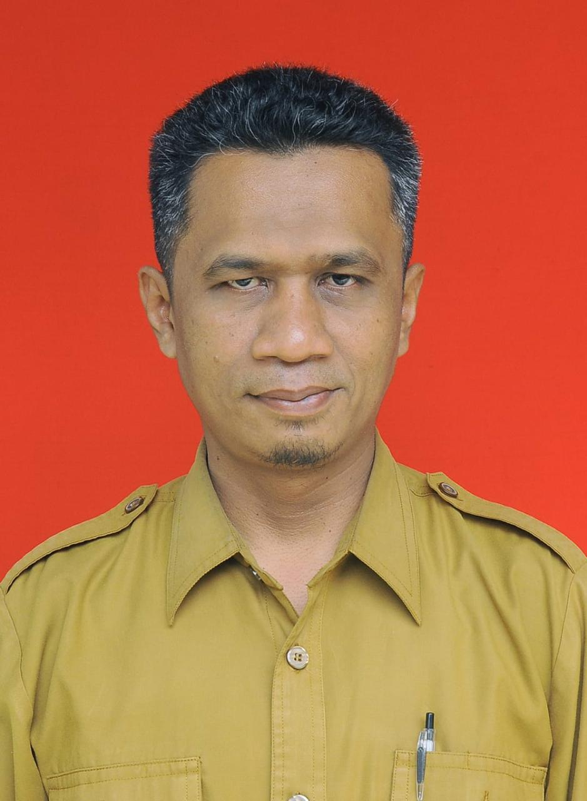
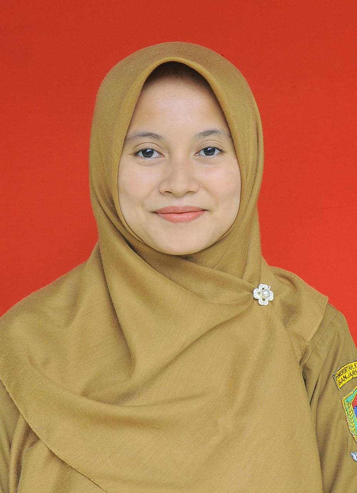
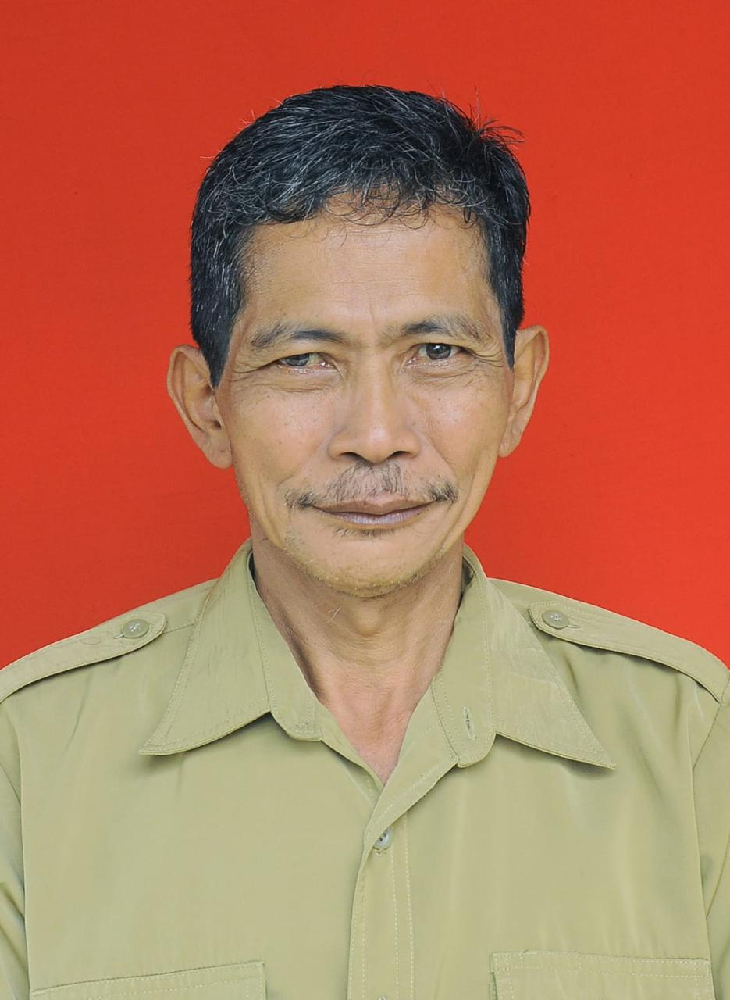
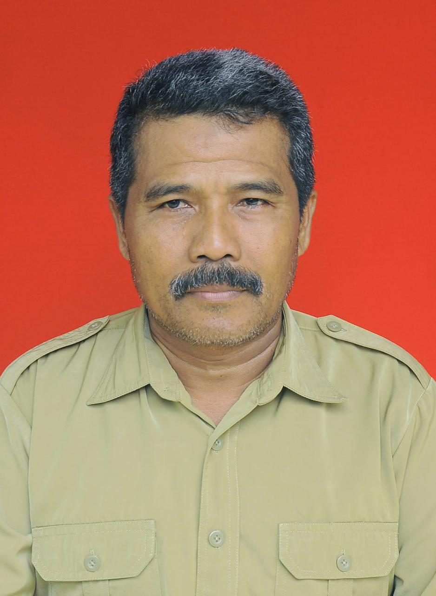
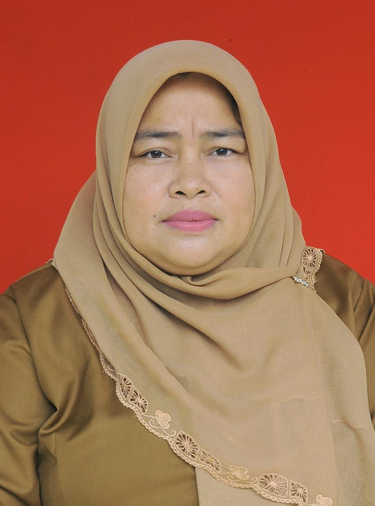
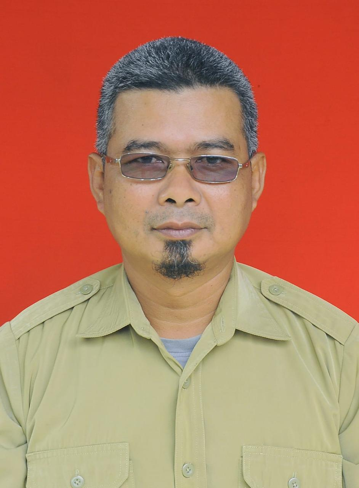
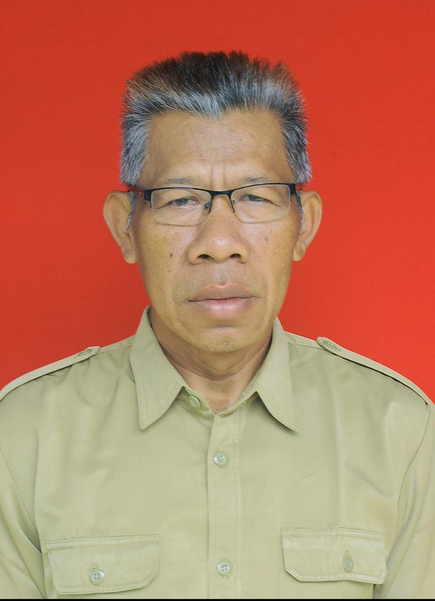
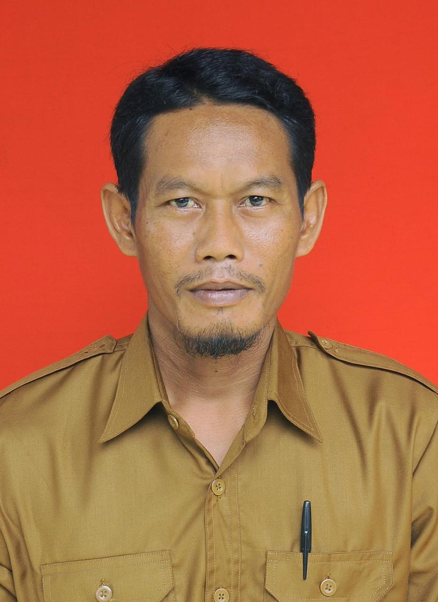
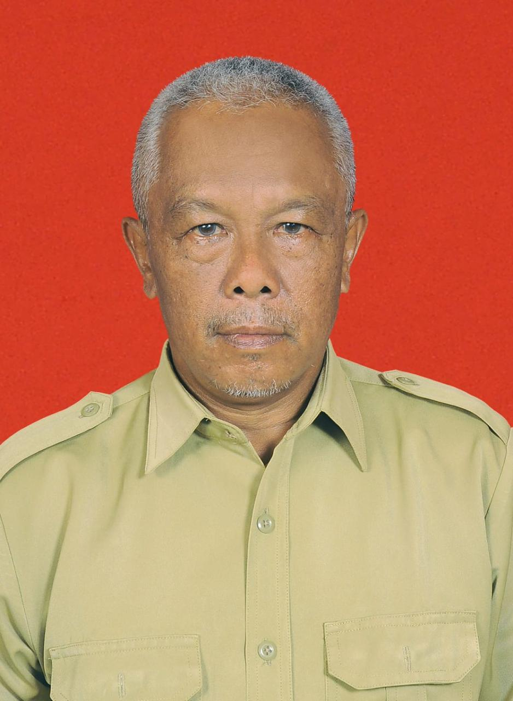












